単元7: 日本美術史
日本の美術の歴史を、原始・古代から近現代まで一気にたどります。それぞれの時代を象徴する有名な建築物や仏像、絵画、作家の名前を一致させ、定期テストで得点源にしましょう！
1. 先史・古代の美術（旧石器〜古墳時代）
仏教が伝わる前の、実用性やまじないに深く関わる原始美術の要点です。
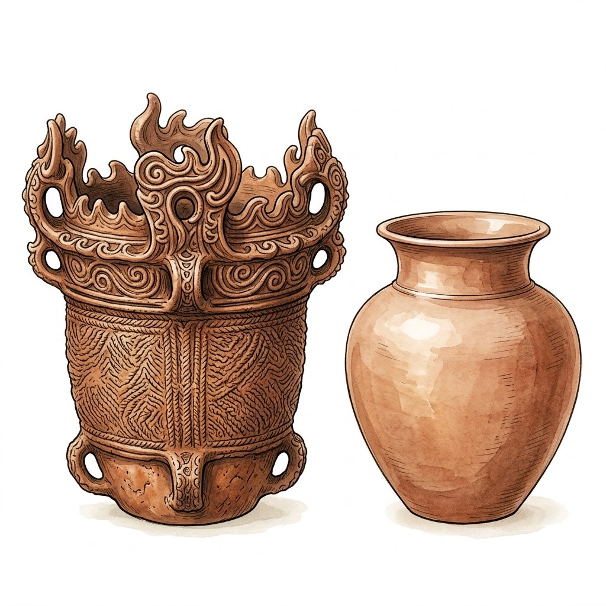
- 縄文土器（じょうもんどき）：厚手で黒褐色、表面に縄目の文様があるのが特長。また、まじないや祈りのために作られた「土偶（どぐう）」も有名。
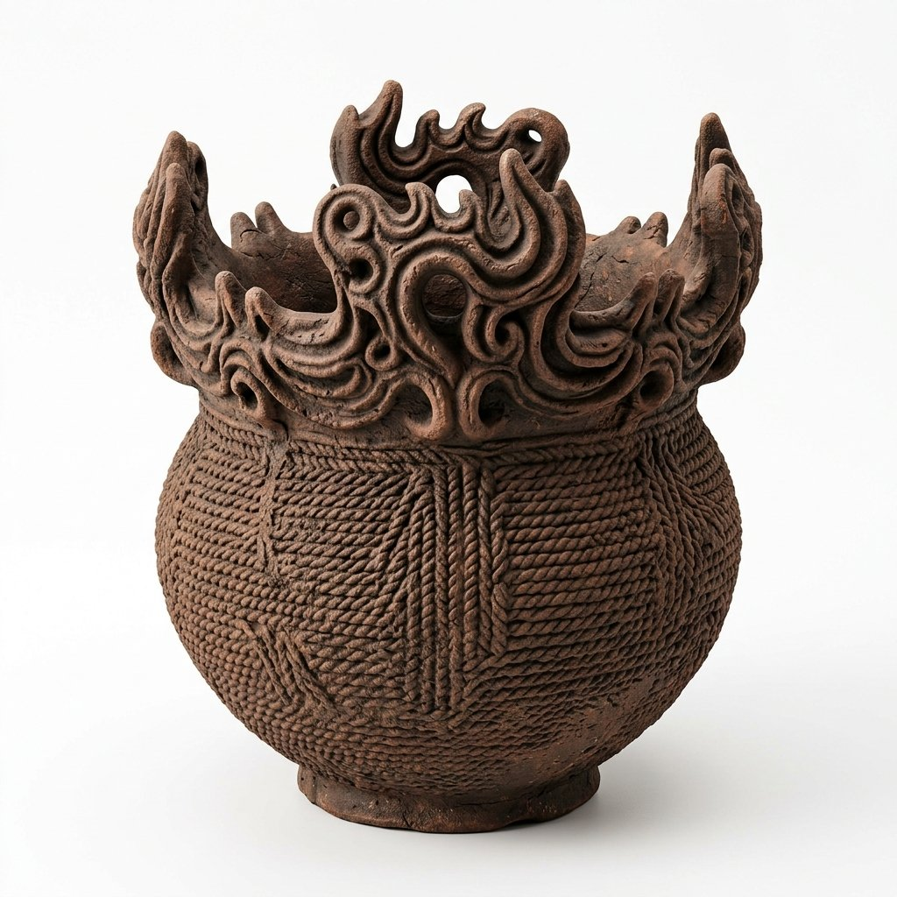
- 弥生土器（やよいどき）：薄手で赤褐色をしており、縄文土器よりシンプルで実用的（壺や甕など）。また、祭祀具である青銅器の「銅鐸（どうたく）」も登場。
- 埴輪（はにわ）：古墳時代、権力者の墓である巨大な古墳の周囲に、護衛やまじない目的で並べられた人、馬、家などをかたどった素焼きの焼き物。
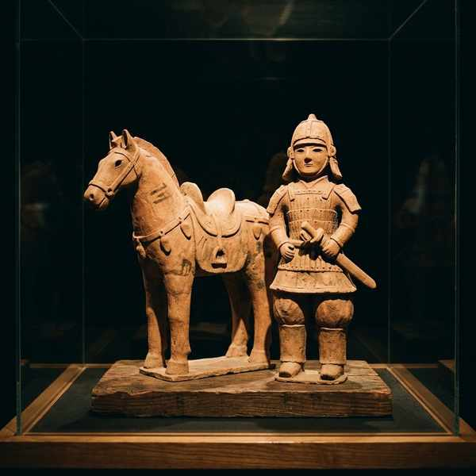
2. 飛鳥・奈良・平安時代の美術（仏教美術と国風文化）
飛鳥時代の仏教伝来に伴い、大規模な建築や美しく荘厳な彫刻（仏像）が数多く作られました。
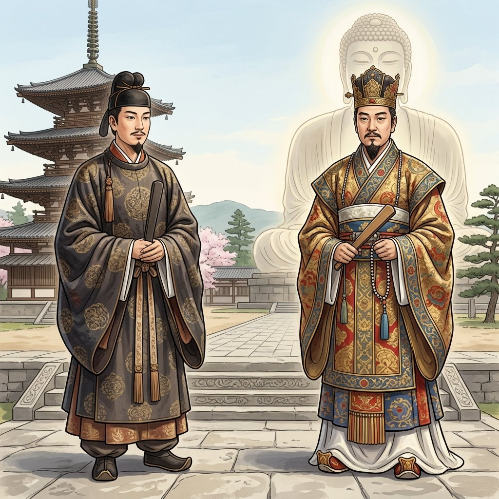
① 飛鳥・奈良時代の建築と彫刻
- 法隆寺（ほうりゅうじ）：飛鳥時代に聖徳太子によって建立された、世界最古の木造建築群。
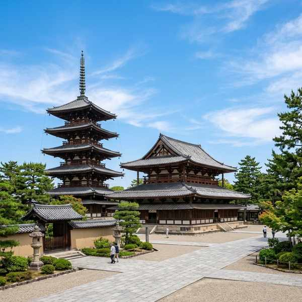
- 東大寺（とうだいじ）：奈良時代に聖武（しょうむ）天皇によって建立され、世界最大級の「大仏」が造立された。
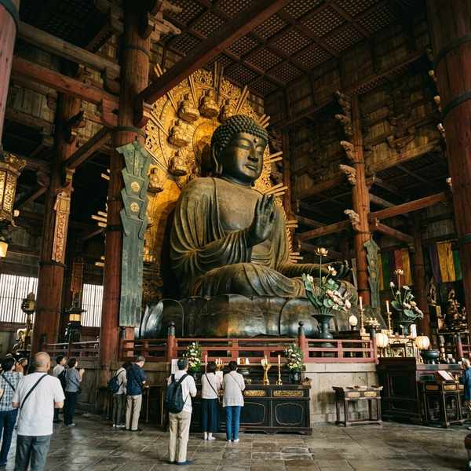
- 正倉院（しょうそういん）：東大寺にある校倉造（あぜくらづくり）の倉庫。シルクロードを経て西方から伝わった国際色豊かな工芸品（宝物）を保管。
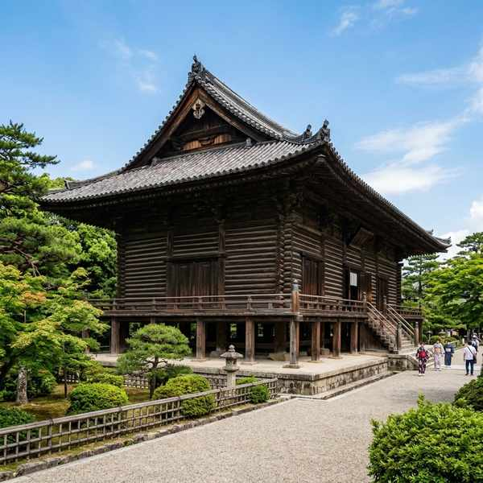
- 阿修羅（あしゅら）像：興福寺にある、少年のようにあどけなく繊細な表情を持つ奈良時代の代表的仏像。
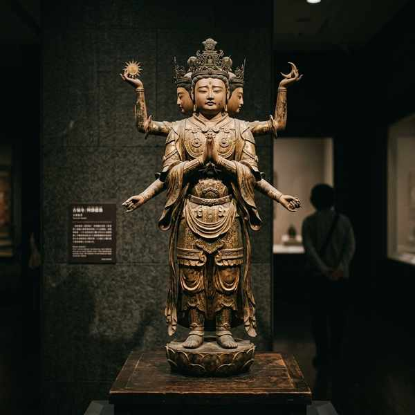
- 薬師寺東塔（やくしじとうとう）：白鳳文化を代表する三重の塔。その軽快で美しい律動的なバランスから「凍れる音楽」と称えられる。
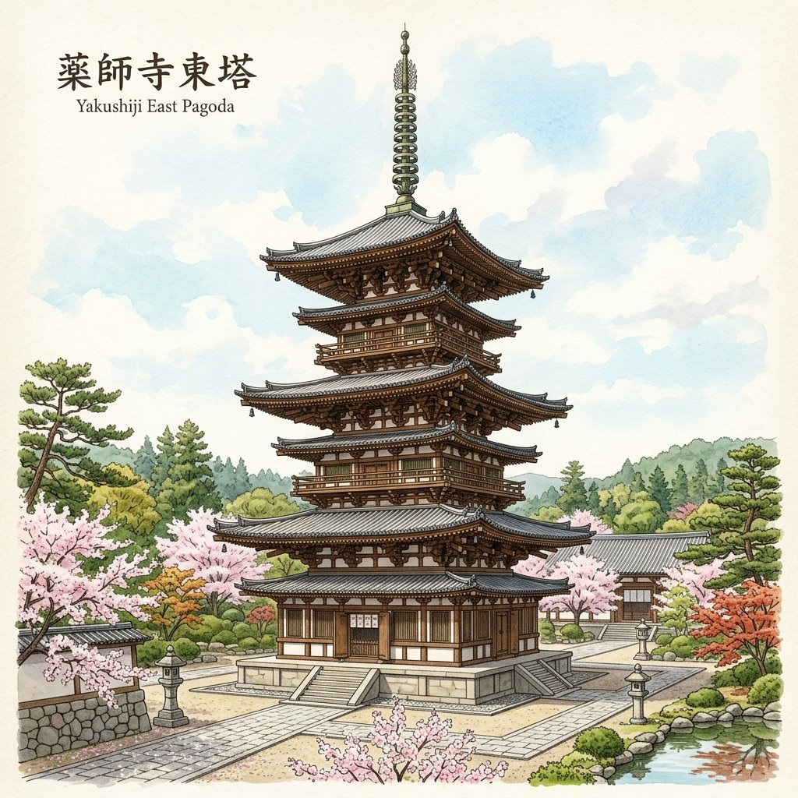
② 平安時代の国風文化と絵巻物
- 寝殿造（しんでんづくり）：平安貴族の住宅様式。池と庭園を中心にし、白木造りで開放的なのが特徴。
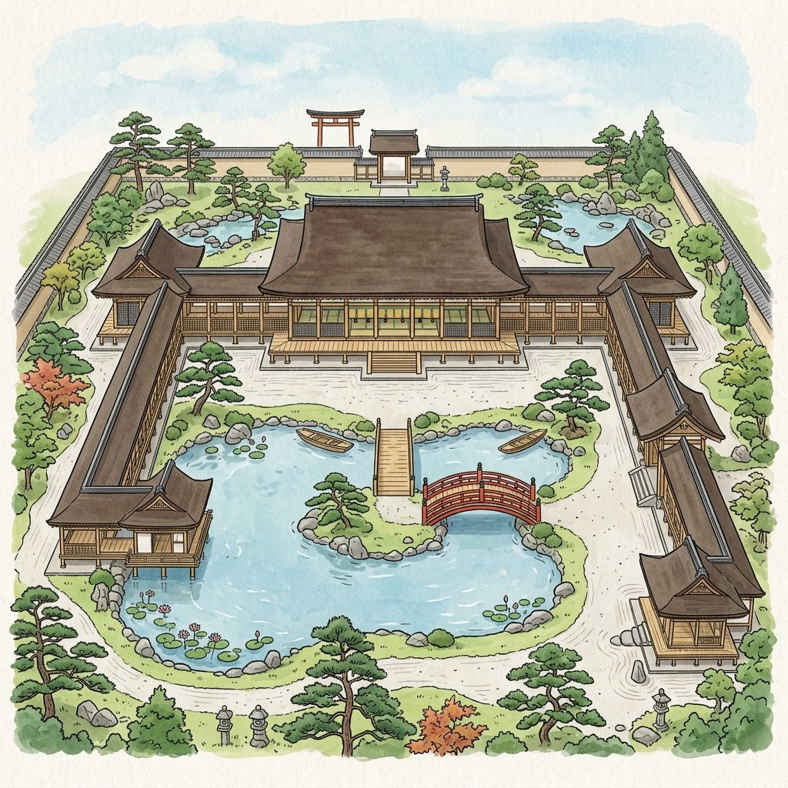
- 大和絵（やまとえ）：平安時代に発展した、日本固有の豊かな自然や庶民の風俗などを情緒的に描いた絵画。
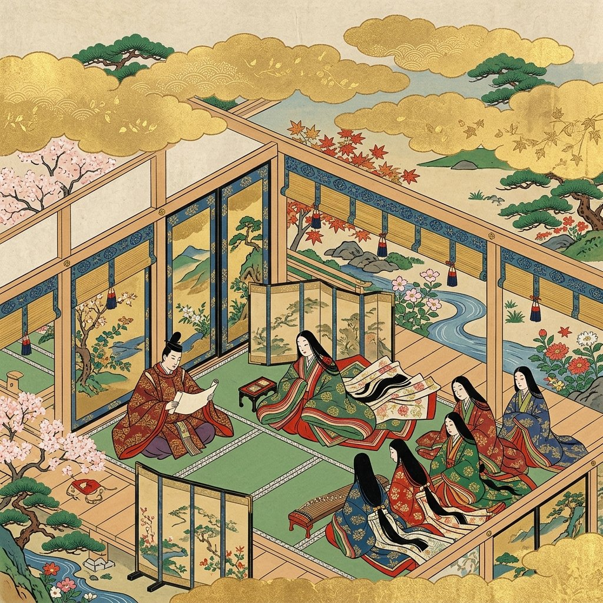
- 絵巻物（えまきもの）：長い紙に詞（テキスト）と大和絵を交互に描き、横方向に巻いて物語を読み進める表現。
- 『鳥獣人物戯画（ちょうじゅうじんぶつぎが）』：ウサギ、カエル、サルなどが相撲や水遊びをする様子を擬人化して墨一色で描いた傑作絵巻。
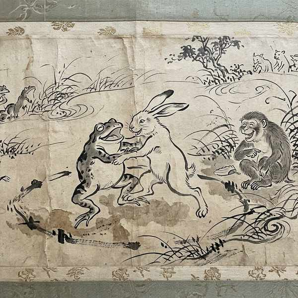
- 『鳥獣人物戯画（ちょうじゅうじんぶつぎが）』：ウサギ、カエル、サルなどが相撲や水遊びをする様子を擬人化して墨一色で描いた傑作絵巻。
- 曼荼羅（まんだら）：密教において、宇宙の真理や無数の仏たちの世界を、一定の幾何学的な法則に従って図解した仏画。
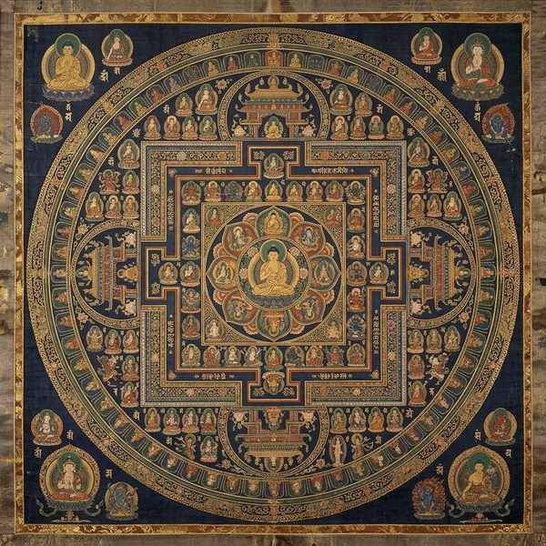
3. 鎌倉〜安土桃山時代の美術（力強さと豪華さ）
武士が台頭する中世・近世に入ると、美術のリアリズムとスケールは大きく増していきました。
① 鎌倉時代の彫刻
- 金剛力士（こんごうりきし）像：東大寺南大門に安置されている、力強く躍動感のある二体の巨像。鎌倉仏師の運慶（うんけい）や快慶らによって作られた、写実的・肉体美あふれる彫刻です。
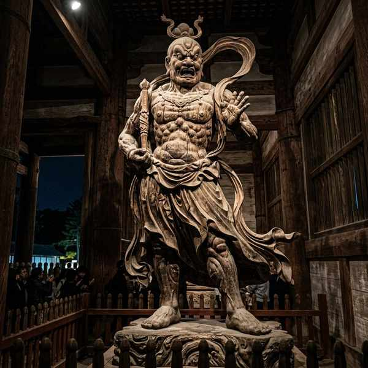
② 室町時代の水墨画と禅の庭
- 水墨画（すいぼくが）：禅宗の影響を強く受け、墨の濃淡やにじみ・かすれだけで自然の奥行きを表現する絵画。室町時代に雪舟（せっしゅう）によって大成されました。
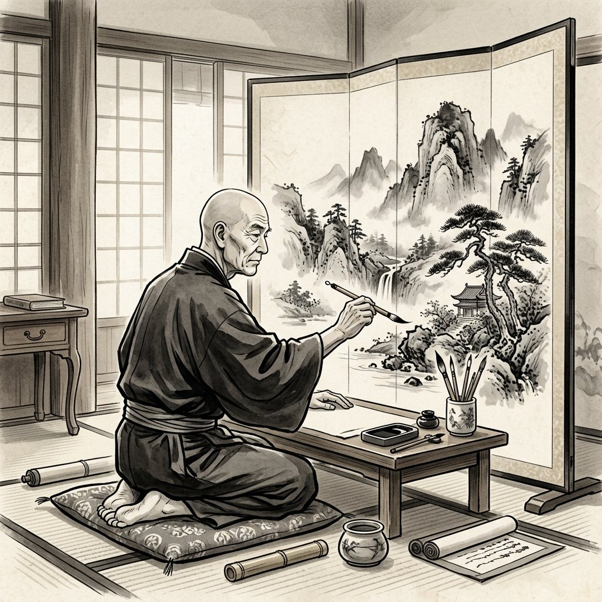
- 枯山水（かれさんすい）：禅寺で作られた、水を使わず石と白砂だけで川や海などの山水風景を抽象的に表現した庭園様式（京都・竜安寺などが有名）。
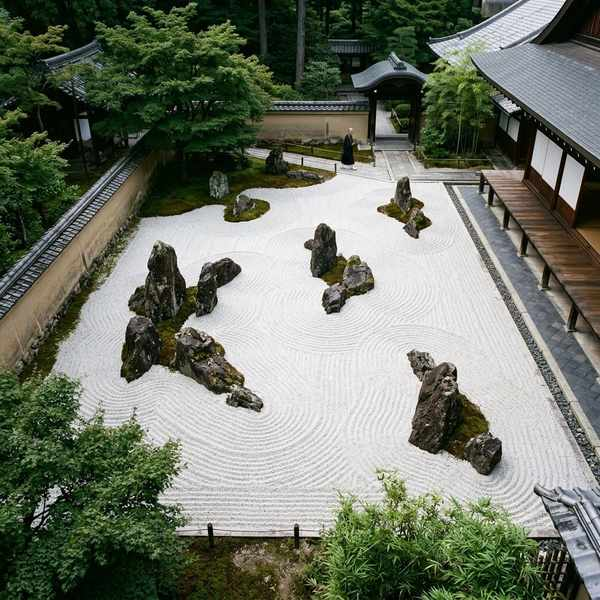
③ 安土桃山時代の豪華な城郭絵画
- 障壁画（しょうへきが）／濃絵（だみえ）：権力者である大名が、権威を示すために城の金箔をふんだんに貼ったふすまや屏風に描かせた、豪華絢爛な大画面絵画。
- 狩野永徳（かのうえいとく）：「唐獅子図屏風」など、金碧障壁画を大成した。
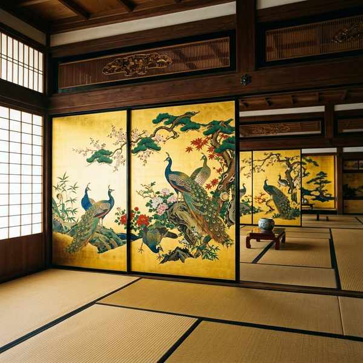
- 長谷川等伯（はせがわとうはく）：水墨による静寂の傑作「松林図屏風」を描いた。
- 狩野永徳（かのうえいとく）：「唐獅子図屏風」など、金碧障壁画を大成した。
4. 江戸〜近現代の美術（大衆化と西洋化）
江戸時代の町人文化から、明治以降の西洋化、そして世界を舞台にした現代美術への流れです。
① 江戸時代の琳派と浮世絵
- 琳派（りんぱ）：斬新なデザインと構成美を持つ装飾画の一派。
- 俵屋宗達（たわらやそうたつ）：国宝「風神雷神図屏風」を描いた。
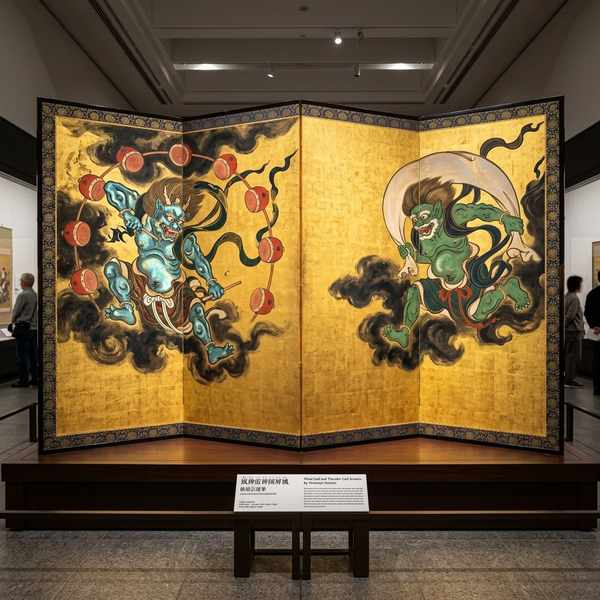
- 俵屋宗達（たわらやそうたつ）：国宝「風神雷神図屏風」を描いた。
- 浮世絵（うきよえ）：江戸時代、町人の間で大流行した庶民の風俗画。多色刷り木版画（錦絵）の技術で安価に大量生産され、海外（欧州印象派）へ「ジャポニスム」の大きな影響を与えました。
- 菱川師宣（ひしかわもろのぶ）：浮世絵の祖。「見返り美人図」で有名。
- 葛飾北斎（かつしかほくさい）：「富嶽三十六景 凱風快晴」など、大胆な構図の風景版画を描いた。
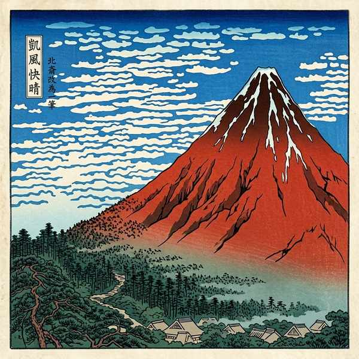
- 歌川広重（うたがわひろしげ）：「東海道五十三次」などの叙情的な風景浮世絵を描いた。
② 明治以降・近現代の美術
- 洋画（ようが）：西洋から導入された材料（油絵の具）や写実的な技法で描いた絵画。黒田清輝（くろだせいき）の「湖畔」が有名。
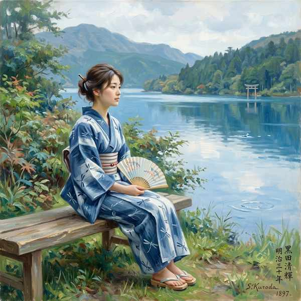
- 日本画（にほんが）：西洋画と区別するため、従来の日本の材料（岩絵の具、和紙等）と技法を守り、近代化した絵画。横山大観（よこやまたいかん）の「無我」が有名。
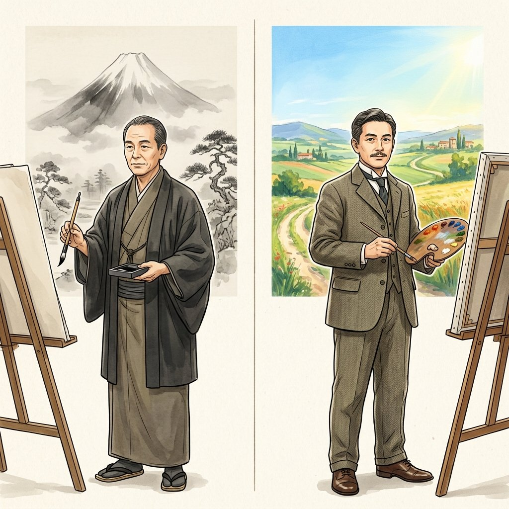
- 荻原守衛（おぎわらもりえ）：ロダンの彫刻に感銘を受け、日本の近代彫刻を先導した人物（代表作「女」）。
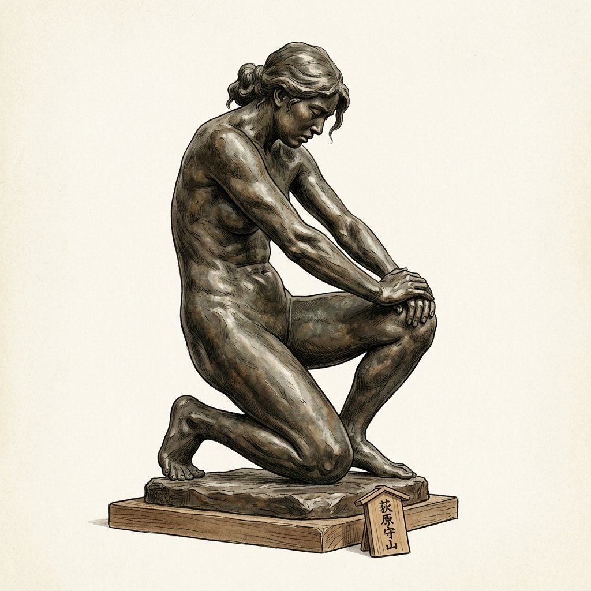
- 岡本太郎（おかもとたろう）：昭和の巨匠。1970年大阪万博の「太陽の塔」や、巨大壁画「明日の神話」を残した。
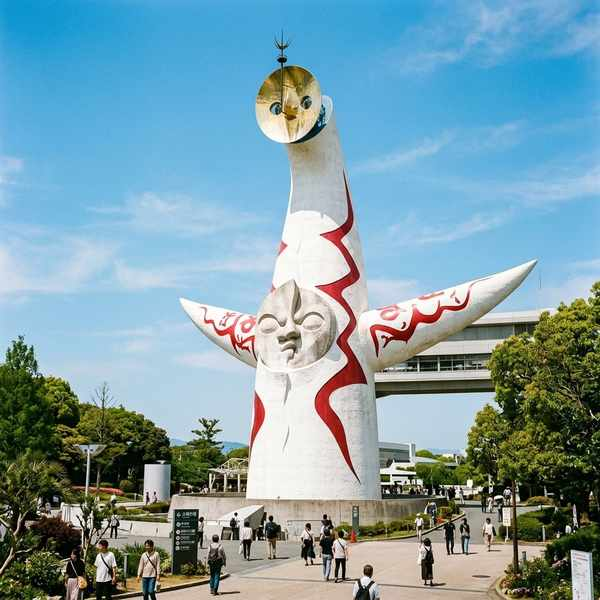
- 草間彌生（くさまやよい）：世界的な現代美術家。水玉模様（ドット）や「かぼちゃ」をモチーフにした作品群で知られる。
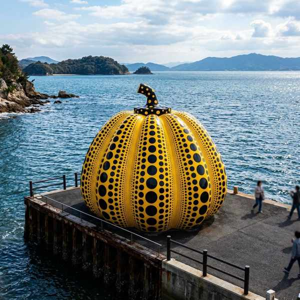
🔥 定期テスト対策・暗記のコツ
① 聖徳太子＝法隆寺、聖武天皇＝東大寺
奈良時代の「東大寺」と飛鳥時代の「法隆寺」は、それぞれ建てさせた「聖武天皇」と「聖徳太子」をあべこべにしたひっかけ問題が出ます。国ごとに国分寺を作って仏教で国を守ろうとしたのは聖武天皇（大仏）としっかり整理しましょう。
② 運慶と金剛力士像の躍動感
鎌倉時代の美術は「力強さ、写実、躍動感」がキーワードです。「運慶（うんけい）」の「金剛力士像（東大寺南大門）」は、記述問題でも最も狙われやすい仏像です。
③ 雪舟＝水墨画
室町時代の「雪舟」と、墨の濃淡だけで表現する「水墨画」の組み合わせは、歴史のテストでも美術のテストでも必出の重要キーワードです。